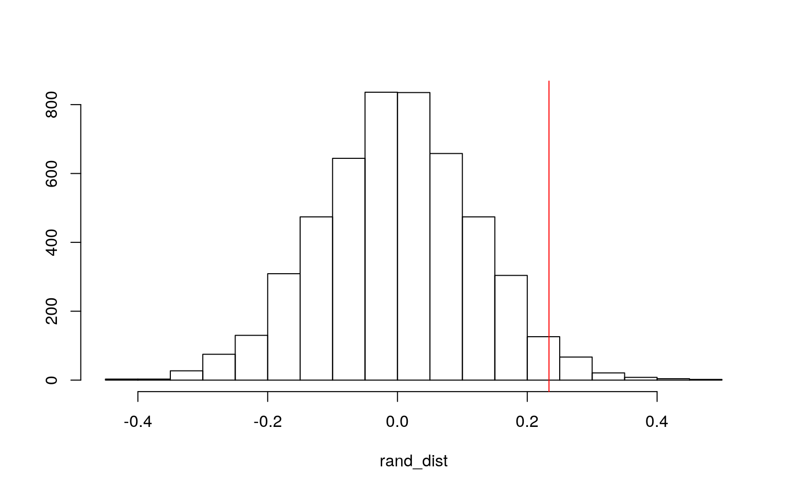
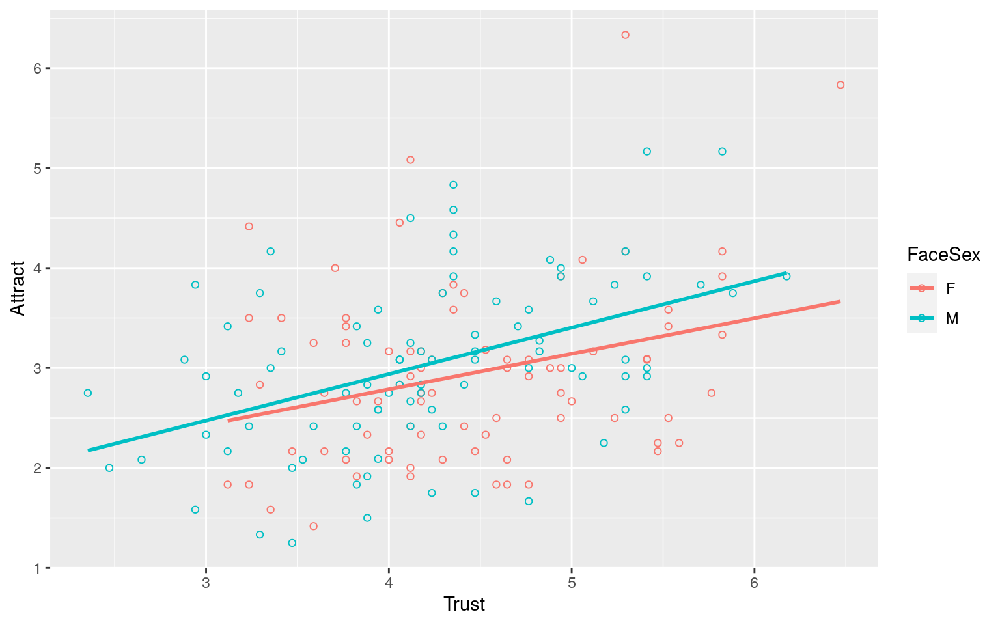
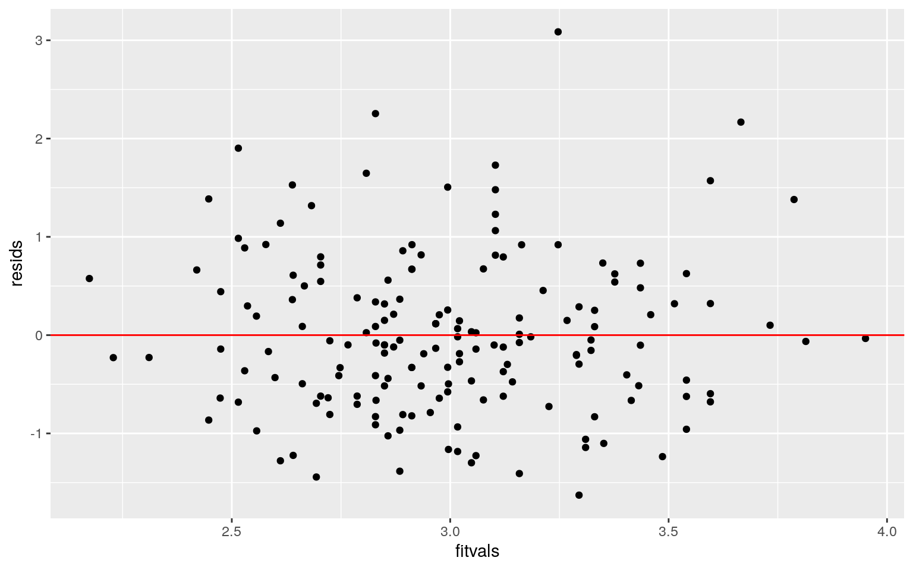
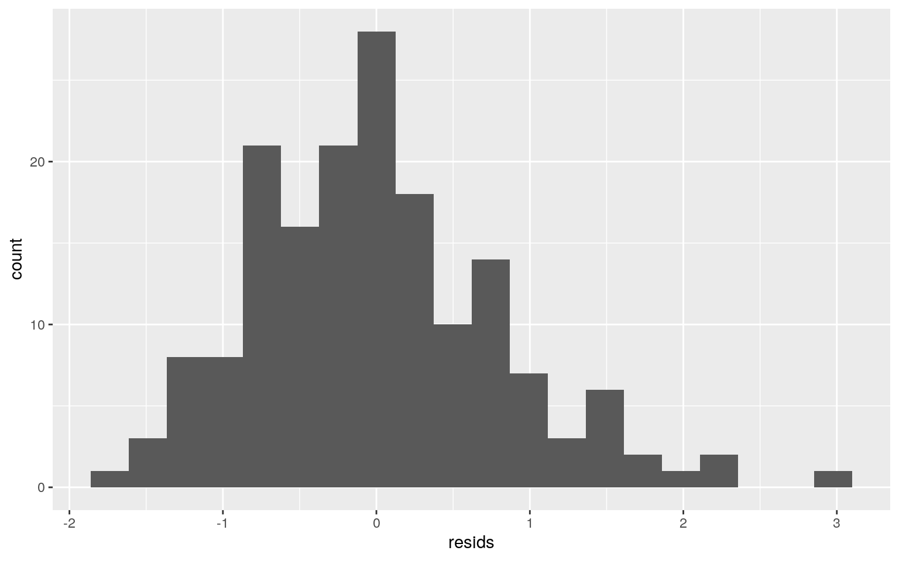
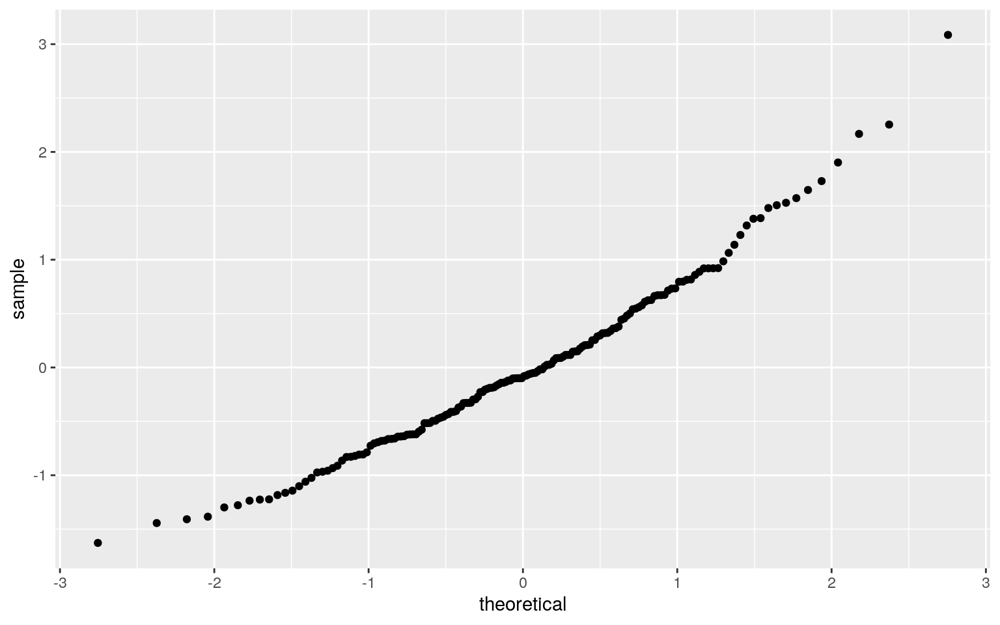
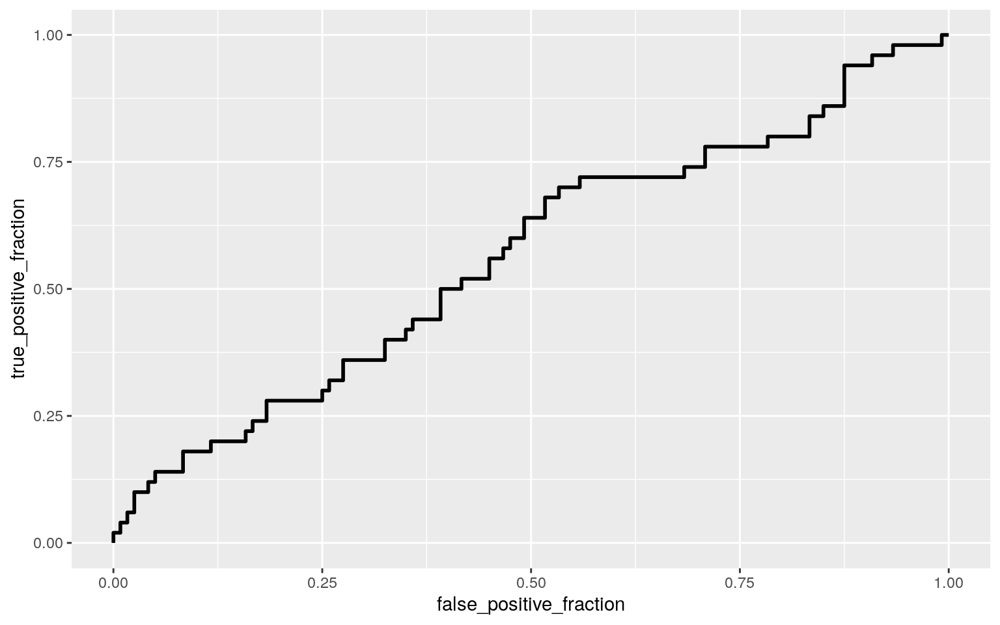

A knitted R Markdown document (as a PDF) and the raw R Markdown file (as .Rmd) should both be submitted to Canvas by 11:59pm on 5/1/2020. These two documents will be graded jointly, so they must be consistent (i.e., don’t change the R Markdown file without also updating the knitted document). Knit an html copy too, for later! In the .Rmd file for Project 2, you can copy the first code-chunk into your project .Rmd file to get better formatting. Notice that you can adjust the opts_chunk$set(…) above to set certain parameters if necessary to make the knitting cleaner (you can globally set the size of all plots, etc). You can copy the set-up chunk in Project2.Rmd: I have gone ahead and set a few for you (such as disabling warnings and package-loading messges when knitting)!
Like before, I envision your written text forming something of a narrative structure around your code/output. All results presented must have corresponding code. Any answers/results/plots etc. given without the corresponding R code that generated the result will not be graded. Furthermore, all code contained in your final project document should work properly. Please do not include any extraneous code or code which produces error messages. (Code which produces warnings is acceptable, as long as you understand what the warnings mean).
The dataset I found was the Faithfulfaces in the Stat2data library. This dataset consists of college students as they were asked to look at a photograph of an opposite-sex adult face and to rate the person, on a scale from 1 (low) to 10 (high), for attractiveness. They were also asked to rate trustworthiness, faithfulness, and sexual dimorphism (i.e., how masculine a male face is and how feminine a female face is). Overall, 68 students (34 males and 34 females) rated 170 faces (88 men and 82 women). This dataset consists of 7 variables and 170 observations. The SexDimorph variable measures the rating of sexual dimorphism (masculinity for males, femininity for females). The attract variable is the rating of attractiveness. The cheater variable is a variable that measured if the face subject was unfaihtful to the partner and it was rated using a 1=yes and a 0=no. The trust variable was rating the trustworthiness. The Faithful variable was the faithfulness. Lastly, the Ratersex variable showed the sex of the rater (F=female or M=male).
library(Stat2Data)
data(FaithfulFaces)
?FaithfulFaces
man_faith <- manova(cbind(SexDimorph,Attract,Trust,Faithful)~FaceSex,data=FaithfulFaces)
summary(man_faith)## Df Pillai approx F num Df den Df Pr(>F)
## FaceSex 1 0.20961 10.939 4 165 6.827e-08 ***
## Residuals 168
## ---
## Signif. codes: 0 '***' 0.001 '**' 0.01 '*' 0.05 '.' 0.1
' ' 1summary.aov(man_faith)## Response SexDimorph :
## Df Sum Sq Mean Sq F value Pr(>F)
## FaceSex 1 12.36 12.3598 13.885 0.0002652 ***
## Residuals 168 149.55 0.8902
## ---
## Signif. codes: 0 '***' 0.001 '**' 0.01 '*' 0.05 '.' 0.1
' ' 1
##
## Response Attract :
## Df Sum Sq Mean Sq F value Pr(>F)
## FaceSex 1 0.363 0.36264 0.4798 0.4895
## Residuals 168 126.982 0.75584
##
## Response Trust :
## Df Sum Sq Mean Sq F value Pr(>F)
## FaceSex 1 2.314 2.31372 3.7592 0.05419 .
## Residuals 168 103.401 0.61548
## ---
## Signif. codes: 0 '***' 0.001 '**' 0.01 '*' 0.05 '.' 0.1
' ' 1
##
## Response Faithful :
## Df Sum Sq Mean Sq F value Pr(>F)
## FaceSex 1 27.229 27.2293 35.823 1.27e-08 ***
## Residuals 168 127.698 0.7601
## ---
## Signif. codes: 0 '***' 0.001 '**' 0.01 '*' 0.05 '.' 0.1
' ' 1pairwise.t.test(FaithfulFaces$Faithful,FaithfulFaces$FaceSex,p.adj="none")##
## Pairwise comparisons using t tests with pooled SD
##
## data: FaithfulFaces$Faithful and FaithfulFaces$FaceSex
##
## F
## M 1.3e-08
##
## P value adjustment method: nonepairwise.t.test(FaithfulFaces$Trust,FaithfulFaces$FaceSex,p.adj="none")##
## Pairwise comparisons using t tests with pooled SD
##
## data: FaithfulFaces$Trust and FaithfulFaces$FaceSex
##
## F
## M 0.054
##
## P value adjustment method: none1-(.95)^16## [1] 0.5598733.05/16## [1] 0.003125I ran a MANOVA test to evaluate to see if SexDimorph, attractfulness, trustfulness, and faithfulness had a mean difference against FaceSex. In running the test, there was a p-value present that was well below 0.05 and was 6.827e-08. After running the MANOVA test, an ANOVA was conduct to evaluate and see which variables had a mean difference. Only SexDimorph, Trust, and Faithful were the only variables that contained a mean difference while the variable Attract did not as it had a p-value of 0.4895 and the other p-values were below 0.05. Following the anova, a pairwise t test was perfomred for the varibales SexDimorph, Trust, and Faithful since they were the only variables that displayed a mean difference in the anova test. The pairwise t-test showed that all of those specific variables depicted a difference between males and females, as they were below 0.05.
FaithfulFaces%>%group_by(FaceSex)%>%summarize(mean_face=mean(Trust))## # A tibble: 2 x 2
## FaceSex mean_face
## <fct> <dbl>
## 1 F 4.44
## 2 M 4.214.444061-4.210591## [1] 0.23347rand_dist<-vector()
for(i in 1:5000){
Faith<-data.frame(sex=sample(FaithfulFaces$FaceSex),Trust=FaithfulFaces$Trust)
rand_dist[i]<-mean(Faith[Faith$sex=="F",]$Trust)-
mean(Faith[Faith$sex=="M",]$Trust)}
mean(rand_dist>0.23347)*2## [1] 0.054{hist(rand_dist,main="",ylab="");abline(v=0.23347,col="red")}
Utilizing the randomized test, the test gathered a sample of FaceSex and pulled it 5,000 times and then evaluated the mean of both sexes from the Trust variable and subtracted them to find the difference. After running a randomized test, the p-value of a two-tailed test was less than 0.05, as it was 0.0564. The histogram was then displayed to show the null distribution and test statistic. The null hypothesis is that there is no difference in the Trust varibale in males and females. The alternative hypothesis is that there is a difference in the Trust varibale in males and females. In evaluation of the randomized test and the p-value, we can reject the null hypothesis.
library(sandwich)
library(lmtest)
fit <- lm(Attract~Trust*FaceSex, data=FaithfulFaces)
coef(fit)## (Intercept) Trust FaceSexM Trust:FaceSexM
## 1.3648789 0.3555250 -0.2845297 0.1092399ggplot(fit, aes(x=Trust, y=Attract, color = FaceSex)) +
geom_point(shape=1) +
geom_smooth(method=lm,se=FALSE)
resids<-fit$residuals
fitvals<-fit$fitted.values
ggplot()+geom_point(aes(fitvals,resids))+geom_hline(yintercept=0, color='red')
ggplot()+geom_histogram(aes(resids), bins=20)
ggplot()+geom_qq(aes(sample=resids))+geom_qq_line()
summary(fit)$coef[,1:2] #uncorrected## Estimate Std. Error
## (Intercept) 1.3648789 0.5459844
## Trust 0.3555250 0.1212013
## FaceSexM -0.2845297 0.7090092
## Trust:FaceSexM 0.1092399 0.1606560coeftest(fit, vcov = vcovHC(fit))[,1:2] #corrected## Estimate Std. Error
## (Intercept) 1.3648789 0.7469485
## Trust 0.3555250 0.1710796
## FaceSexM -0.2845297 0.8565108
## Trust:FaceSexM 0.1092399 0.1969627After running a linear regression, the coefficent estimates for Trust was 0.355250, FaceSex for males was -0.2845297, and the Trust:FaceSex M was 0.1092399. A plot of Trust vs Attract in males and females was perfomred and from observation of the graph, there seemed to be a higher interaction in males than in females. Assumptions were analyzed, and everything was observed to be normal.
boot_face<-FaithfulFaces[sample(nrow(FaithfulFaces),replace=TRUE),]
samp_distn<-replicate(5000, {
boot_face<-FaithfulFaces[sample(nrow(FaithfulFaces),replace=TRUE),]
fit2<-lm(Attract~Trust*FaceSex,data=FaithfulFaces)
coef(fit2)
})
samp_distn%>%t%>%as.data.frame%>%summarize_all(sd)## (Intercept) Trust FaceSexM Trust:FaceSexM
## 1 0 0 0 0fit2<-glm(Cheater~Attract+Trust+Faithful, data=FaithfulFaces, family="binomial")
coeftest(fit2)##
## z test of coefficients:
##
## Estimate Std. Error z value Pr(>|z|)
## (Intercept) 0.88845 1.26872 0.7003 0.4838
## Attract -0.18216 0.25986 -0.7010 0.4833
## Trust 0.11510 0.31059 0.3706 0.7109
## Faithful -0.33650 0.24842 -1.3545 0.1756#confusion matrix
prob <- predict(fit2,type="response")
table(predict=as.numeric(prob>.5),truth=FaithfulFaces$Cheater)%>%addmargins## truth
## predict 0 1 Sum
## 0 120 50 170
## Sum 120 50 170class_diag<-function(prob,truth){
tab<-table(factor(prob>.5,levels=c("FALSE","TRUE")),truth)
acc=sum(diag(tab))/sum(tab)
sens=tab[2,2]/colSums(tab)[2]
spec=tab[1,1]/colSums(tab)[1]
ppv=tab[2,2]/rowSums(tab)[2]
if(is.numeric(truth)==FALSE & is.logical(truth)==FALSE) truth<-as.numeric(truth)-1
ord<-order(prob, decreasing=TRUE)
prob <- prob[ord]; truth <- truth[ord]
TPR=cumsum(truth)/max(1,sum(truth))
FPR=cumsum(!truth)/max(1,sum(!truth))
dup<-c(prob[-1]>=prob[-length(prob)], FALSE)
TPR<-c(0,TPR[!dup],1); FPR<-c(0,FPR[!dup],1)
n <- length(TPR)
auc<- sum( ((TPR[-1]+TPR[-n])/2) * (FPR[-1]-FPR[-n]) )
data.frame(acc,sens,spec,ppv,auc)
}
library(plotROC)
RocPlot <- ggplot(FaithfulFaces)+geom_roc(aes(d=Cheater,m=prob),n.cut=0)
RocPlot
calc_auc(RocPlot)## PANEL group AUC
## 1 1 -1 0.5633333#10-fold
set.seed(1234)
k=10
data1<-FaithfulFaces[sample(nrow(FaithfulFaces)),]
folds<-cut(seq(1:nrow(FaithfulFaces)),breaks=k,labels=FALSE)
diags<-NULL
for(i in 1:k){
train<-data1[folds!=i,]
test<-data1[folds==i,]
truth<-test$Cheater
fit3<-glm(Cheater~.,data=FaithfulFaces,family="binomial")
probs2<-predict(fit3,newdata = test,type="response")
diags<-rbind(diags,class_diag(probs2,truth))
}
apply(diags,2,mean)## acc sens spec ppv auc
## 0.7000000 0.0000000 0.9909091 NaN 0.6036863A logistic regression was performed and in this occurence, the intercepts depict the interactions of attractfullness and trustfulness in a cheater. The intercept for attract was -0.18216, the intercept for trust was 0.11510, and the intercept for faithful was -0.33650. The accuracy, which was 0.7058824, sensitivity, which was 0, specificity, which was 1, and the auc, which was 0.5633333, were all computed. The auc is not as good since it is so low. Following the running of the 10-fold, the auc seemed to remain the same and there was no difference.
library(glmnet)
x <- model.matrix(fit)[,-1]
y<-as.matrix(FaithfulFaces$Cheater)
cv<-cv.glmnet(x,y,family='binomial')
lasso1<-glmnet(x,y,family='binomial',lambda=cv$lambda.1se)
coef(lasso1)## 4 x 1 sparse Matrix of class "dgCMatrix"
## s0
## (Intercept) -0.8754687
## Trust 0.0000000
## FaceSexM .
## Trust:FaceSexM .set.seed(1234)
k=10
data2<-FaithfulFaces[sample(nrow(FaithfulFaces)),]
folds<-cut(seq(1:nrow(FaithfulFaces)),breaks=k,labels=F)
diags<-NULL
for(i in 1:k){
train2<-data2[folds!=i,]
test2<-data2[folds==i,]
truth2<-test2$Cheater
probs3<- predict(fit,newdata=test2, type="response")
diags<-rbind(diags,class_diag(probs3,truth2))
}
apply(diags,2,mean)## acc sens spec ppv auc
## 0.2941176 1.0000000 0.0000000 0.2941176 0.4573660A lasso regression was performed and the observnace of the auc was lower than the one that was calculated in the logistic regression. The auc in the lasso regression is 0.4573660 and the auc in the logistic regression was above 0.50 and after running the 10-fold as well, and it seemed that the accuracy was not as high when running the logistic regression.